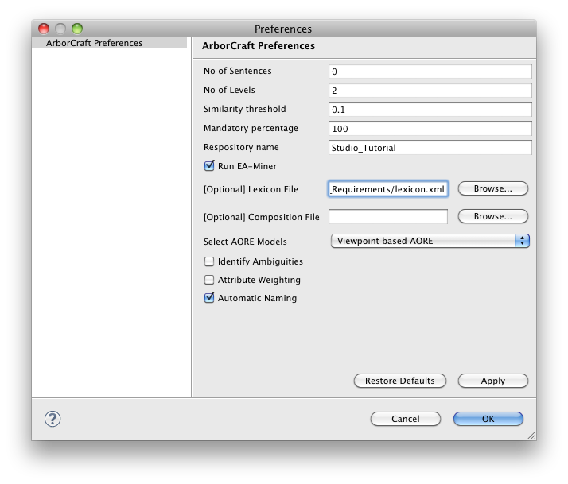
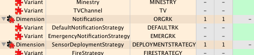
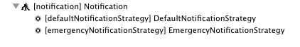

DiVA Requirements Engineering Tools Scenario
A number of pre-generated files are provided within this scenario to demonstrate the Requirement Engineering tools provided within the DiVA Studio. These files include:
- cm_v1.txt - a textual requirements document from the CM Crisis Management case-study.
- lexicon.xml - a lexicon file to aid the identification of the soft-goals.
- cm_v2.fmp - a refined version of the ArborCraftExt generated feature model.
- cm_final.fmp - the final version of the FMP model.
- cm_final.diva - a completed version of the DiVA model for this case-study.
Step 1: Feature Model Creation
The first step in the scenario is to generate a feature model from the textual requirements document that has been provided (cm_v1.txt). The recommended settings for ArborCraftExt are shown below (see Figure 1). Feel free to experiment with ArborCraftExt settings but these recommended settings are the ones which the subsequent models used in the scenario are based upon.

Figure 1 ArborCraftExt configuration used.
Once complete, ArborCraftExt will generate a new folder (cm_v1) within which a new FMP model will be created (cm_v1.fmp). A refined version of this feature model is provided (cm_v2.fmp) with the features renamed and re-factored slightly.
Step 2: DiVA Model Generation
From the refined FMP model (cm_v2.fmp), a DiVA model representation can be created by activating the FMP2DiVA plugin. The result of this is a DiVA model (cm_v2.fmp.diva) alongside the FMP model.
At this point it is possible to demonstrate the traceability between the two models by selecting a dimension or variant within the DiVA model and finding its equivalent element in the FMP model (right-click-> Find in FMP Model). The reverse can also be performed in the the FMP model by selecting a leaf-node or its parent (right-click-> Find in DiVA model).
Step 3: Apply Changes
Changes can be made to the DiVA model that can subsequently be reapplied back to the originating FMP model. In this scenario we will add a new dimension (Notification) and two new variants (DefaultNotificationStrategy and EmergencyNotificationStrategy) to this dimension as shown below (see Figure 2).

Figure 2 Notification dimension (and variants) added.
Once the changes have been, save the DiVA model to a new file (e.g. cm_v3.fmp.diva).
The difference between these two DiVA models can now be established and changes applied back to the original feature model (cm_v2.fmp) via the DiVA Compare plugin.
The result of this will be a new branch in the feature model containing the notification feature and its children as shown below (see Figure 3).

Figure 3 Changes applied back to the FMP model with Notifcation feature (and sub-features) added.
This set of features can be edited and repositioned as necessary.
Step 4: Apply Simulation Results
When simulation results have been generated (see cm_final.diva) in a DiVA model, these can be applied to the originating feature model to extract the relevant requirements for further analysis.
To achieve this, simply select the relevant DiVA model (cm_final.diva), and activate the DiVA Compare plugin (right-click ArborCraft-> Apply Simulations). Select the suggested configuration and then the relevant FMP model (cm_final.fmp). The requirements text can then saved.
Step 4: Feature Model Comparison
The feature model similarity analysis can also be demonstrated across the two provided feature models (cm_v2.fmp and cm_final.fmp). Simply select these two FMP models and activate the plugin (right-click-> ArborCraft->Similarity Analysis).
The result of this is a text file that contains a breakdown of the similarity measure of the two trees compared. This text file is located in a folder called "Similarity Results" contained within the root of the opened project.